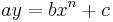
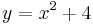

De: La Frikipedia, la enciclopedia extremadamente seria.
De: La Frikipedia, la enciclopedia extremadamente seria. De: La Frikipedia, la enciclopedia extremadamente seria.
| De la serie animales y otros bichejos: | ||
| ||
| Nombre común: | Parábola | |
| Nombre científico: |  | |
| Especie: | Figura geométrica | |
| Subespecie: | Curva | |
| Alimentación: | Neuronas muertas | |
| Apariencia: | Especie de curva | |
| Hábitat natural: | Todo el mundo | |
| Localización: | 
| |
| Número aproximado de ejemplares: |
| |
| Fecha de extinción: | Jamás | |
| Pokemonización: | Ninguna (así es lo suficientemente mala) | |

|
Estando Jesús con sus discipulos en la punta del cerro, les habló de la siguiente manera: -En verdad les digo que  Los discipulos atónitos se veían entre ellos sin comprender, hasta que uno de ellos tuvo el valor y se dirigió al maestro: -Lo siento maestro, no entendemos. A lo que Jesús resóndió: -No se preocupen, ¡es una parábola! |

|
| Parábola de la parábola |
Los científicos y demás seres subnormales como ellos, dicen que la parábola es la gráfica de una expresión matemática, pero estudiosos de las parábolas han descubierto que estos seres se disfrazan de rayas para poder comerse a sus víctimas, si las ves, no trates de entenderlas, o domarlas, o acariciarlas, podrias acabar como un punto en el espacio.
Originalmente, las parábolas se encontraban en el jardín del Edén y se dedicaban a comer y comer. Al transcurrir el tiempo y destruirse el jardín para dar paso a la evolución, las parábolas tomaron dos rumbos, las mas salvajes y poco discretas se convirtieron en Pacman.
Por otro lado, sus primas con un poco mas de cerebro y menos sed de sangre, optaron por encontrar métodos menos reveladores de su verdadero propósito, y se empezaron a esconder entre los garabatos de los matemáticos, consumiendo las neuronas muertas y los puntos de I.Q. gastados por estos. Mas tarde, esta subespecie se dividió en dos grandes grupos:
Estas últimas evolucionaron de múltiples formas para despistar al enemigo.
LLegando así a nuestros días, con prácticamente ninguna modificación.
Las parábolas comienzan a buscarte cuando tienes un poco mas de la primaria terminada ganas de seguir aprendiendo, te buscan, te acechan, se hacen amigas de tu profesor de matemáticas y tratan de convencerte de que tienes que estudiarlas para pasar la materia, así comienzan a acercarte a ti y a succionar tu I.Q, hasta que quedas como un zombie descerebrado.
Se disfrazarán de rayas de gises en pizarrones, de pintadas de plumones en pizarrones blancos y de bits en pizarrones electrónicos, de copa de sombrero, de pedazo de circulo, de bulbo, de gorrita de judio, de marco de ventana o de puerta, de cejas de chicas lindas y hasta de panza de borracho, pero no te dejes sorprender.
Después de cierto tiempo, las parábolas comienzan a aparecerse en todos los momentos de tu vida y las ves por todos lados, en ese momento, corres un grave peligro y si no buscas ayuda profesional pronto, puedes morir o convertirte en Reguetonero
Los únicos seres que tienen poder para acabar con estas alimañas son aquellos fieles seguidores de Dios si quieres ser salvo, busca a uno de sus tallarinescos apéndices para que te den la libertad. A continuación una breve lista de lo que debes hacer para evitar a estas alimañas.
| |
|
Álgebra y Aritmética
Estadística
|
Autor(es):